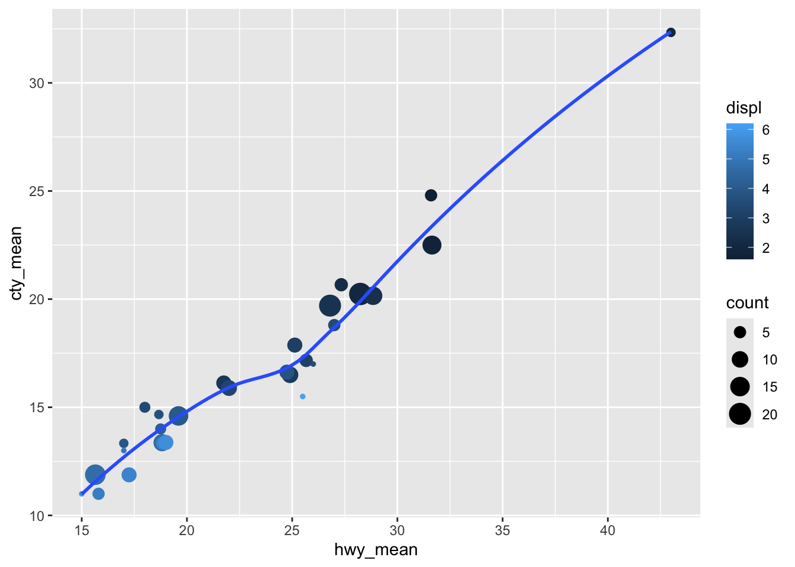

2.4 Manipulating Data Frames (Data Transformation)
Rarely do you get the data in exactly the right form you need. Often you’ll need to create some new variables or summaries, or maybe you just want to rename the variables or re-order the observations in order to make the data a little easier to work with, which we’ll be doing through the tidyverse package dplyr
In this section, you are going to learn four of the five key dplyr functions that allow you to solve the vast majority of your data manipulation challenges (you already learned about filter() in the previous section:
arrange()- Reorder the rowsselect()- Pick variables by their namesmutate()- Create new variables with functions of existing variablessummarize()- Collapse many values down to a single summary (can also be spelled assummarise())
These can all be used in conjunction with group_by() which changes the scope of each function from operating on the entire dataset to operating on it group-by-group. These six functions provide the verbs for a language of data manipulation.
All verbs work similarly:
The first argument is a data frame.
The subsequent arguments describe what to do with the data frame, using the variable names (without quotes).
The result is a new data frame.
Together these properties make it easy to chain together multiple simple steps to achieve a complex result. Let’s dive in and see how these verbs work.
2.4.1 Arrange Rows with arrange()
arrange() works similarly to filter() except instead of selecting rows, it changes their order. It takes a data frame and a set of column names (or more complicated expressions) to order by. If you provide more than one column name, each additional column will be used to break ties in the values of preceding columns:
## # A tibble: 234 × 11
## manufacturer model displ year cyl trans drv cty hwy fl class
## <chr> <chr> <dbl> <int> <int> <chr> <chr> <int> <int> <chr> <chr>
## 1 audi a4 1.8 1999 4 auto… f 18 29 p comp…
## 2 audi a4 1.8 1999 4 manu… f 21 29 p comp…
## 3 audi a4 2 2008 4 manu… f 20 31 p comp…
## 4 audi a4 2 2008 4 auto… f 21 30 p comp…
## 5 audi a4 2.8 1999 6 auto… f 16 26 p comp…
## 6 audi a4 2.8 1999 6 manu… f 18 26 p comp…
## 7 audi a4 3.1 2008 6 auto… f 18 27 p comp…
## 8 audi a4 quattro 1.8 1999 4 manu… 4 18 26 p comp…
## 9 audi a4 quattro 1.8 1999 4 auto… 4 16 25 p comp…
## 10 audi a4 quattro 2 2008 4 manu… 4 20 28 p comp…
## # ℹ 224 more rowsUse desc() to re-order by a column in descending order:
## # A tibble: 234 × 11
## manufacturer model displ year cyl trans drv cty hwy fl class
## <chr> <chr> <dbl> <int> <int> <chr> <chr> <int> <int> <chr> <chr>
## 1 volkswagen gti 2 1999 4 manual(m5) f 21 29 r comp…
## 2 volkswagen gti 2 1999 4 auto(l4) f 19 26 r comp…
## 3 volkswagen gti 2 2008 4 manual(m6) f 21 29 p comp…
## 4 volkswagen gti 2 2008 4 auto(s6) f 22 29 p comp…
## 5 volkswagen gti 2.8 1999 6 manual(m5) f 17 24 r comp…
## 6 volkswagen jetta 1.9 1999 4 manual(m5) f 33 44 d comp…
## 7 volkswagen jetta 2 1999 4 manual(m5) f 21 29 r comp…
## 8 volkswagen jetta 2 1999 4 auto(l4) f 19 26 r comp…
## 9 volkswagen jetta 2 2008 4 auto(s6) f 22 29 p comp…
## 10 volkswagen jetta 2 2008 4 manual(m6) f 21 29 p comp…
## # ℹ 224 more rowsMissing values are always sorted at the end:
## # A tibble: 3 × 1
## x
## <dbl>
## 1 5
## 2 2
## 3 NA## # A tibble: 3 × 1
## x
## <dbl>
## 1 2
## 2 5
## 3 NA## # A tibble: 3 × 1
## x
## <dbl>
## 1 5
## 2 2
## 3 NA2.4.2 Select Columns with select()
It’s not uncommon to get datasets with hundreds or even thousands of variables. In this case, the first challenge is often narrowing in on the variables you’re actually interested in. select() allows you to rapidly zoom in on a useful subset using operations based on the names of the variables.
## # A tibble: 234 × 3
## manufacturer model year
## <chr> <chr> <int>
## 1 audi a4 1999
## 2 audi a4 1999
## 3 audi a4 2008
## 4 audi a4 2008
## 5 audi a4 1999
## 6 audi a4 1999
## 7 audi a4 2008
## 8 audi a4 quattro 1999
## 9 audi a4 quattro 1999
## 10 audi a4 quattro 2008
## # ℹ 224 more rows## # A tibble: 234 × 5
## manufacturer model displ year cyl
## <chr> <chr> <dbl> <int> <int>
## 1 audi a4 1.8 1999 4
## 2 audi a4 1.8 1999 4
## 3 audi a4 2 2008 4
## 4 audi a4 2 2008 4
## 5 audi a4 2.8 1999 6
## 6 audi a4 2.8 1999 6
## 7 audi a4 3.1 2008 6
## 8 audi a4 quattro 1.8 1999 4
## 9 audi a4 quattro 1.8 1999 4
## 10 audi a4 quattro 2 2008 4
## # ℹ 224 more rows## # A tibble: 234 × 6
## manufacturer model cty hwy fl class
## <chr> <chr> <int> <int> <chr> <chr>
## 1 audi a4 18 29 p compact
## 2 audi a4 21 29 p compact
## 3 audi a4 20 31 p compact
## 4 audi a4 21 30 p compact
## 5 audi a4 16 26 p compact
## 6 audi a4 18 26 p compact
## 7 audi a4 18 27 p compact
## 8 audi a4 quattro 18 26 p compact
## 9 audi a4 quattro 16 25 p compact
## 10 audi a4 quattro 20 28 p compact
## # ℹ 224 more rows#selects every column EXCEPT the ones between "model" and "drv" ("displ", "year", "cyl", "trans"). Note that the column ranges in this scenario must be in parenthesesThere are a number of helper functions you can use within select():
starts_with("abc"): matches names that begin with “abc”.ends_with("xyz"): matches names that end with “xyz”.contains("ijk"): matches names that contain “ijk”.matches("(.)\\1"): selects variables that match a regular expression. This one matches any variables that contain repeated characters.num_range("x", 1:3): matches x1, x2 and x3.
To see a longer list of other functions and more detailed usage, use ?select for more details.
You can also use select() to rename variables, but it’s rarely useful because it drops all of the variables not explicitly mentioned. Instead, use rename(), a variant of select(), that keeps all the variables that aren’t explicitly mentioned:
## # A tibble: 234 × 11
## make model displ year cyl trans drv cty hwy fl class
## <chr> <chr> <dbl> <int> <int> <chr> <chr> <int> <int> <chr> <chr>
## 1 audi a4 1.8 1999 4 auto(l5) f 18 29 p compact
## 2 audi a4 1.8 1999 4 manual(m5) f 21 29 p compact
## 3 audi a4 2 2008 4 manual(m6) f 20 31 p compact
## 4 audi a4 2 2008 4 auto(av) f 21 30 p compact
## 5 audi a4 2.8 1999 6 auto(l5) f 16 26 p compact
## 6 audi a4 2.8 1999 6 manual(m5) f 18 26 p compact
## 7 audi a4 3.1 2008 6 auto(av) f 18 27 p compact
## 8 audi a4 quattro 1.8 1999 4 manual(m5) 4 18 26 p compact
## 9 audi a4 quattro 1.8 1999 4 auto(l5) 4 16 25 p compact
## 10 audi a4 quattro 2 2008 4 manual(m6) 4 20 28 p compact
## # ℹ 224 more rowsAnother option is to use select() in conjunction with the everything() helper. This is useful if you have a handful of variables you’d like to move to the start of the data frame.
## # A tibble: 234 × 11
## year model manufacturer displ cyl trans drv cty hwy fl class
## <int> <chr> <chr> <dbl> <int> <chr> <chr> <int> <int> <chr> <chr>
## 1 1999 a4 audi 1.8 4 auto… f 18 29 p comp…
## 2 1999 a4 audi 1.8 4 manu… f 21 29 p comp…
## 3 2008 a4 audi 2 4 manu… f 20 31 p comp…
## 4 2008 a4 audi 2 4 auto… f 21 30 p comp…
## 5 1999 a4 audi 2.8 6 auto… f 16 26 p comp…
## 6 1999 a4 audi 2.8 6 manu… f 18 26 p comp…
## 7 2008 a4 audi 3.1 6 auto… f 18 27 p comp…
## 8 1999 a4 quattro audi 1.8 4 manu… 4 18 26 p comp…
## 9 1999 a4 quattro audi 1.8 4 auto… 4 16 25 p comp…
## 10 2008 a4 quattro audi 2 4 manu… 4 20 28 p comp…
## # ℹ 224 more rows2.4.3 Add New Variables with mutate()
Besides selecting sets of existing columns, it’s often useful to add new columns that are functions of existing columns. That’s the job of mutate().
mutate() always adds new columns at the end of your dataset, so we’ll start by creating a narrower dataset so we can see the new variables.
Remember that when you’re in RStudio, the easiest way to see all the columns is View().
In the code chunk below, you’ll see a slightly different format than you’re probably used to. Up until now, we’ve kept all arguments and values for a function on a single line. Sometimes that can start to look quite busy and difficult to understand. Luckily, like mentioned earlier, R does not care about white space, so we can put each value on a new line. In fact, RStudio has a built-in functionality where new lines within a function will be indented to the same spot as the start of the first value. This way, it’s a little simpler to understand the code we’re reading. (RStudio even has a shortcut (Alt + i) to bring a new line to the proper indentation)
mpg_small <- select(mpg,
manufacturer,
model,
displ,
year,
cty,
hwy)
#would be the same if we typed:
#mpg_small <- select(mpg, manufacturer, model, year, cty, hwy)
mutate(mpg_small,
mileage_diff = hwy - cty,
cty_mileage_per_ltr = cty / displ,
hwy_mileage_per_ltr = hwy / displ)## # A tibble: 234 × 9
## manufacturer model displ year cty hwy mileage_diff cty_mileage_per_ltr
## <chr> <chr> <dbl> <int> <int> <int> <int> <dbl>
## 1 audi a4 1.8 1999 18 29 11 10
## 2 audi a4 1.8 1999 21 29 8 11.7
## 3 audi a4 2 2008 20 31 11 10
## 4 audi a4 2 2008 21 30 9 10.5
## 5 audi a4 2.8 1999 16 26 10 5.71
## 6 audi a4 2.8 1999 18 26 8 6.43
## 7 audi a4 3.1 2008 18 27 9 5.81
## 8 audi a4 qua… 1.8 1999 18 26 8 10
## 9 audi a4 qua… 1.8 1999 16 25 9 8.89
## 10 audi a4 qua… 2 2008 20 28 8 10
## # ℹ 224 more rows
## # ℹ 1 more variable: hwy_mileage_per_ltr <dbl>You can also refer to columns that you’ve just created:
## # A tibble: 234 × 8
## manufacturer model displ year cty hwy mileage_diff mileage_diff_per_ltr
## <chr> <chr> <dbl> <int> <int> <int> <int> <dbl>
## 1 audi a4 1.8 1999 18 29 11 6.11
## 2 audi a4 1.8 1999 21 29 8 4.44
## 3 audi a4 2 2008 20 31 11 5.5
## 4 audi a4 2 2008 21 30 9 4.5
## 5 audi a4 2.8 1999 16 26 10 3.57
## 6 audi a4 2.8 1999 18 26 8 2.86
## 7 audi a4 3.1 2008 18 27 9 2.90
## 8 audi a4 qu… 1.8 1999 18 26 8 4.44
## 9 audi a4 qu… 1.8 1999 16 25 9 5
## 10 audi a4 qu… 2 2008 20 28 8 4
## # ℹ 224 more rowsIf you only want to keep the new variables (i.e., you do not want any of the old ones), you can use transmute():
## # A tibble: 234 × 2
## cty_mileage_per_ltr hwy_mileage_per_ltr
## <dbl> <dbl>
## 1 10 16.1
## 2 11.7 16.1
## 3 10 15.5
## 4 10.5 15
## 5 5.71 9.29
## 6 6.43 9.29
## 7 5.81 8.71
## 8 10 14.4
## 9 8.89 13.9
## 10 10 14
## # ℹ 224 more rows2.4.3.1 Useful creation functions
There are many functions for creating new variables that you can use with mutate(). The key property is that the function must be vectorised: it must take a vector of values as input, return a vector with the same number of values as output. T
There’s no way to list every possible function that you might use, but here’s a selection of functions that are frequently useful:
Arithmetic operators:
+,-,*,/,^These are all vectorised, using the so called “recycling rules”. If one parameter is shorter than the other, it will be automatically extended to be the same length. This is most useful when one of the arguments is a single number:
displ * 3.4,cty / 1.5, etc.Arithmetic operators are also useful in conjunction with the aggregate functions. For example,
x / sum(x)calculates the proportion of a total, andy - mean(y)computes the difference from the mean.Modular arithmetic:
%/%(integer division) and%%(remainder), wherex == y * (x %/% y) + (x %% y).- Modular arithmetic is a handy tool because it allows you to break integers up into pieces. For example, in the flights dataset, you can compute hour and minute from dep_time with:
## # A tibble: 234 × 4
## model year millenium century_decade_year
## <chr> <int> <dbl> <dbl>
## 1 a4 1999 1 999
## 2 a4 1999 1 999
## 3 a4 2008 2 8
## 4 a4 2008 2 8
## 5 a4 1999 1 999
## 6 a4 1999 1 999
## 7 a4 2008 2 8
## 8 a4 quattro 1999 1 999
## 9 a4 quattro 1999 1 999
## 10 a4 quattro 2008 2 8
## # ℹ 224 more rowsLogs:
log(),log2(),log10(). Logarithms are an incredibly useful transformation for dealing with data that ranges across multiple orders of magnitude.Offsets:
lead()andlag()allow you to refer to leading or lagging values.- This allows you to compute running differences (e.g.,
x - lag(x)) or find when values change (x != lag(x)). They are most useful in conjunction withgroup_by()
- This allows you to compute running differences (e.g.,
## [1] 1 2 3 4 5 6 7 8 9 10## [1] NA 1 2 3 4 5 6 7 8 9## [1] 2 3 4 5 6 7 8 9 10 NA- Cumulative and rolling aggregates: R provides functions for running sums, products, mins and maxes:
cumsum(),cumprod(),cummin(),cummax(); anddplyrprovidescummean()for cumulative means.
## [1] 1 2 3 4 5 6 7 8 9 10## [1] 1 3 6 10 15 21 28 36 45 55## [1] 1.0 1.5 2.0 2.5 3.0 3.5 4.0 4.5 5.0 5.5Logical comparisons (
<,<=,>,>=,!=, and==), which you learned about earlier. If you’re doing a complex sequence of logical operations it’s often a good idea to store the interim values in new variables so you can check that each step is working as expected.Ranking: there are a number of ranking functions, but you should start with
min_rank(). It does the most usual type of ranking (e.g., 1st, 2nd, 2nd, 4th). The default gives smallest values the small ranks; usedesc(x)to give the largest values the smallest ranks.
## [1] 1 2 2 NA 3 4## [1] 1 2 2 NA 4 5## [1] 5 3 3 NA 2 12.4.4 Grouped Summaries with summarize()
The last key verb is summarise(). It collapses a data frame to a single row:
## # A tibble: 1 × 1
## mean_hwy
## <dbl>
## 1 23.4(We’ll come back to what that na.rm = TRUE means very shortly.)
summarise() is not terribly useful unless we pair it with group_by(). This changes the unit of analysis from the complete dataset to individual groups. Then, when you use the dplyr verbs on a grouped data frame they’ll be automatically applied “by group”. For example, if we applied the exact same code to a data frame grouped by car manufacturer, we get the average highway mileage per manufacturer:
## # A tibble: 15 × 2
## manufacturer mean_hwy
## <chr> <dbl>
## 1 audi 26.4
## 2 chevrolet 21.9
## 3 dodge 17.9
## 4 ford 19.4
## 5 honda 32.6
## 6 hyundai 26.9
## 7 jeep 17.6
## 8 land rover 16.5
## 9 lincoln 17
## 10 mercury 18
## 11 nissan 24.6
## 12 pontiac 26.4
## 13 subaru 25.6
## 14 toyota 24.9
## 15 volkswagen 29.2Together, group_by() and summarise() provide one of the tools that you’ll use most commonly when working with dplyr: grouped summaries.
But before we go any further with this, we need to introduce a powerful new idea: the pipe.
2.4.4.1 Combining Multiple Operations With the Pipe
Imagine that we want to explore the relationship between the city and highway mileage for each engine size. Using what you know about dplyr, you might write code like this:
by_engine <- group_by(mpg, displ)
mileage <- summarise(by_engine,
count = n(),
hwy_mean = mean(hwy, na.rm = TRUE),
cty_mean = mean(cty, na.rm = TRUE)
)
mileage <- filter(mileage,
count > 1)
ggplot(data = mileage,
mapping = aes(x = hwy_mean, y = cty_mean)) +
geom_point(aes(color = displ,
size = count)) +
geom_smooth(se = FALSE)## `geom_smooth()` using method = 'loess' and formula = 'y ~ x'
There are three steps to prepare this data:
Group cars by engine size
Summarize to compute average city and highway mileage, and number of cars with each engine size
Filter to remove noisy points (i.e., engine sizes with only one car)
This code is a little frustrating to write because we have to give each intermediate data frame a name, even though we don’t care about it. Naming things is hard, so this slows down our analysis and can lead to additional errors.
There’s another way to tackle the same problem: with the pipe (%>%):
mileage <- mpg %>%
group_by(displ) %>%
summarize(count = n(),
hwy_mean = mean(hwy, na.rm = TRUE),
cty_mean = mean(cty, na.rm = TRUE)) %>%
filter(count > 1)
ggplot(data = mileage,
mapping = aes(x = hwy_mean, y = cty_mean)) +
geom_point(aes(color = displ,
size = count)) +
geom_smooth(se = FALSE)## `geom_smooth()` using method = 'loess' and formula = 'y ~ x'
mpg %>%
group_by(displ) %>%
summarize(count = n(),
hwy_mean = mean(hwy, na.rm = TRUE),
cty_mean = mean(cty, na.rm = TRUE)) %>%
filter(count > 1) %>%
ggplot(mapping = aes(x = hwy_mean, y = cty_mean)) +
geom_point(aes(color = displ,
size = count)) +
geom_smooth(se = FALSE)## `geom_smooth()` using method = 'loess' and formula = 'y ~ x'
This focuses on the transformations, not what’s being transformed, which makes the code easier to read. You can read it as a series of imperative statements:
Take the
mpgdata frame THENGroup it by
displTHENSummarize by the
displgroup THENFilter the summarized groups THEN
Plot the results
As suggested by this reading, a good way to pronounce %>% when reading code is “then”.
Behind the scenes, x %>% f(y) turns into f(x, y), and x %>% f(y) %>% g(z) turns into g(f(x, y), z) and so on.
You can use the pipe to rewrite multiple operations in a way that you can read left-to-right, top-to-bottom. We’ll use piping frequently from now on because it considerably improves the readability of code.
Working with the pipe is one of the key criteria for belonging to the tidyverse. The only exception is ggplot2…it was written before the pipe was discovered.
2.4.4.2 Missing values
You may have wondered about the na.rm argument we used above. What happens if we don’t set it?
While the mpg dataset may not be the best example of missing values (they are none in the data frame), we can still discuss some of the key components pertaining to them.
As a basic rule, when aggregating missing values, “if there are any missing values in the input, the output will be a missing value”.
Fortunately, all aggregation functions have an na.rm argument which removes the missing values prior to computation:
2.4.4.3 Useful summary functions
Just using means, counts, and sum can get you a long way, but R provides many other useful summary functions:
Measures of location: we’ve used
mean(x), but you can also usemedian(x)- It’s sometimes useful to combine aggregation with logical sub-setting
mpg %>%
group_by(model) %>%
summarise(avg_hwy = mean(hwy),
avg_2L_hwy = mean(hwy[displ > 2])) #the mean highway mileage of only cars with an engine larger than 2 liters## # A tibble: 38 × 3
## model avg_hwy avg_2L_hwy
## <chr> <dbl> <dbl>
## 1 4runner 4wd 18.8 18.8
## 2 a4 28.3 26.3
## 3 a4 quattro 25.8 25
## 4 a6 quattro 24 24
## 5 altima 28.7 28.7
## 6 c1500 suburban 2wd 17.8 17.8
## 7 camry 28.3 28.3
## 8 camry solara 28.1 28.1
## 9 caravan 2wd 22.4 22.4
## 10 civic 32.6 NaN
## # ℹ 28 more rows- Measures of spread:
sd(x)- Standard deviation, the root mean squared deviationIQR(x)- Interquartile rangemad(x)- Median absolute deviation
## # A tibble: 38 × 2
## model hwy_sd
## <chr> <dbl>
## 1 new beetle 7.63
## 2 jetta 6.07
## 3 grand cherokee 4wd 3.25
## 4 corolla 2.65
## 5 civic 2.55
## 6 altima 2.42
## 7 gti 2.30
## 8 dakota pickup 4wd 2.29
## 9 k1500 tahoe 4wd 2.22
## 10 camry solara 2.19
## # ℹ 28 more rows- Measures of rank:
min(x),quantile(x, 0.25),max(x). Quantiles are a generalization of the median. For example,quantile(x, 0.25)will find a value of x that is greater than 25% of the values, and less than the remaining 75%.
## # A tibble: 15 × 3
## manufacturer guzzler effiicient
## <chr> <int> <int>
## 1 audi 23 31
## 2 chevrolet 14 30
## 3 dodge 12 24
## 4 ford 15 26
## 5 honda 29 36
## 6 hyundai 24 31
## 7 jeep 12 22
## 8 land rover 15 18
## 9 lincoln 16 18
## 10 mercury 17 19
## 11 nissan 17 32
## 12 pontiac 25 28
## 13 subaru 23 27
## 14 toyota 15 37
## 15 volkswagen 23 44- Counts:
n()returns the size of the current group.- To count the number of non-missing values, use
sum(!is.na(x)) - To count the number of distinct (unique) values, use
n_distinct(x)
- To count the number of non-missing values, use
mpg %>%
group_by(manufacturer, model) %>%
summarise(n_model_years = n_distinct(year)) %>%
arrange(desc(n_model_years))## `summarise()` has regrouped the output.
## ℹ Summaries were computed grouped by manufacturer and model.
## ℹ Output is grouped by manufacturer.
## ℹ Use `summarise(.groups = "drop_last")` to silence this message.
## ℹ Use `summarise(.by = c(manufacturer, model))` for per-operation grouping (`?dplyr::dplyr_by`) instead.## # A tibble: 38 × 3
## # Groups: manufacturer [15]
## manufacturer model n_model_years
## <chr> <chr> <int>
## 1 audi a4 2
## 2 audi a4 quattro 2
## 3 audi a6 quattro 2
## 4 chevrolet c1500 suburban 2wd 2
## 5 chevrolet corvette 2
## 6 chevrolet k1500 tahoe 4wd 2
## 7 chevrolet malibu 2
## 8 dodge caravan 2wd 2
## 9 dodge dakota pickup 4wd 2
## 10 dodge durango 4wd 2
## # ℹ 28 more rows- Counts are so useful that
dplyrprovides a simple helper if all you want is a count:
mpg %>%
filter(grepl('auto', trans), #keep any row that contains the string "auto" in the `trans` column
drv =='f',
cyl == 6) %>%
group_by(manufacturer, model) %>%
count(model) #The number of times a car model was released that has an automatic transmission, is front-wheel drive, and has 6 cylinders## # A tibble: 12 × 3
## # Groups: manufacturer, model [12]
## manufacturer model n
## <chr> <chr> <int>
## 1 audi a4 2
## 2 chevrolet malibu 3
## 3 dodge caravan 2wd 10
## 4 hyundai sonata 2
## 5 hyundai tiburon 1
## 6 nissan altima 1
## 7 nissan maxima 2
## 8 pontiac grand prix 4
## 9 toyota camry 2
## 10 toyota camry solara 2
## 11 volkswagen jetta 1
## 12 volkswagen passat 2